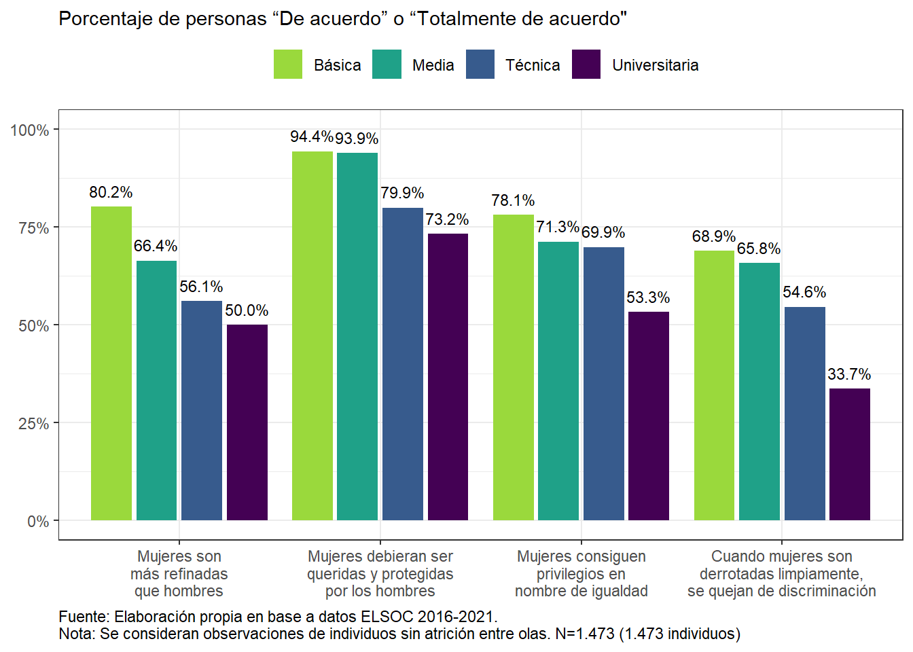

Capítulo 17 Género
17.1 Sexismo hostil y benevolente
datos.01 <- data.frame((svytable(~g01_01_rec + m0_sexo + ola, elsoc_diseno_2, round = F))) %>% group_by(ola, m0_sexo) %>% mutate(p_01=Freq/sum(Freq))
datos.01$ola <- NULL
datos.01$m0_sexo <- NULL
datos.02 <- data.frame((svytable(~g01_02_rec+m0_sexo + ola, elsoc_diseno_2, round = F))) %>% group_by(ola, m0_sexo) %>% mutate(p_02=Freq/sum(Freq))
datos.02$ola <- NULL
datos.02$m0_sexo <- NULL
datos.03 <- data.frame((svytable(~g01_03_rec+m0_sexo + ola, elsoc_diseno_2, round = F))) %>% group_by(ola, m0_sexo) %>% mutate(p_03=Freq/sum(Freq))
datos.03$ola <- NULL
datos.03$m0_sexo <- NULL
datos.04 <- data.frame((svytable(~g01_04_rec+m0_sexo + ola, elsoc_diseno_2, round = F))) %>% group_by(ola, m0_sexo) %>% mutate(p_04=Freq/sum(Freq))
datos.grafico1<- cbind(datos.01, datos.02, datos.03, datos.04)
subset.grafico <- droplevels(subset(datos.grafico1, datos.grafico1$ola == '2021' &
g01_01_rec == 'De Acuerdo' &
g01_02_rec == 'De Acuerdo' &
g01_03_rec == 'De Acuerdo' &
g01_04_rec == 'De Acuerdo'))
#trasponer según variable
datos.grafico <- subset.grafico %>%
pivot_longer(cols = starts_with('g01')) %>%
mutate(variable = factor(name, labels = c('Mujeres son más refinadas y con mejor gusto que los hombres',
'Mujeres debieran ser queridas y protegidas por los hombres',
'Mujeres consiguen privilegios en nombre de igualdad',
'Cuando mujeres son derrotadas limpiamente, se quejan de discriminación'))) %>%
drop_na()
datos.grafico$porcentaje <- with(datos.grafico, case_when(
variable == 'Mujeres son más refinadas y con mejor gusto que los hombres' ~ p_01,
variable == 'Mujeres debieran ser queridas y protegidas por los hombres' ~ p_02,
variable == 'Mujeres consiguen privilegios en nombre de igualdad' ~ p_03,
variable == 'Cuando mujeres son derrotadas limpiamente, se quejan de discriminación' ~ p_04))
#graficamos
gr.16.1 <-datos.grafico %>%
ggplot(aes(y = porcentaje, x = variable, fill = m0_sexo,
label = as.character(scales::percent(porcentaje, accuracy = .1)))) +
theme_bw() +
geom_col(position = "dodge2") +
scale_y_continuous(labels = scales::percent,
limits = c(0, 1)) +
ylab(label = NULL) +
xlab(label = NULL) +
scale_fill_viridis_d(begin = .33, end = .66, direction = -1, option = 'viridis') +
geom_text(vjust = -0.8,
position = position_dodge(width = .9),
size= 2.75) +
theme(legend.position = 'top',
legend.title = element_blank())
gr.16.1
Figura 17.1: Sexismo benévolo y hostil, según sexo (2019). Porcentaje que responde “De acuerdo” o “Totalmente de acuerdo.”
datos.01 <- data.frame((svytable(~g01_01_rec + educ + ola, elsoc_diseno_2, round = F))) %>% group_by(ola, educ) %>% mutate(p_01=Freq/sum(Freq))
datos.01$ola <- NULL
datos.01$educ <- NULL
datos.02 <- data.frame((svytable(~g01_02_rec+educ + ola, elsoc_diseno_2, round = F))) %>% group_by(ola, educ) %>% mutate(p_02=Freq/sum(Freq))
datos.02$ola <- NULL
datos.02$educ <- NULL
datos.03 <- data.frame((svytable(~g01_03_rec+educ + ola, elsoc_diseno_2, round = F))) %>% group_by(ola, educ) %>% mutate(p_03=Freq/sum(Freq))
datos.03$ola <- NULL
datos.03$educ <- NULL
datos.04 <- data.frame((svytable(~g01_04_rec+educ + ola, elsoc_diseno_2, round = F))) %>% group_by(ola, educ) %>% mutate(p_04=Freq/sum(Freq))
datos.grafico1<- cbind(datos.01, datos.02, datos.03, datos.04)
subset.grafico <- droplevels(subset(datos.grafico1, datos.grafico1$ola == '2021' &
g01_01_rec == 'De Acuerdo' &
g01_02_rec == 'De Acuerdo' &
g01_03_rec == 'De Acuerdo' &
g01_04_rec == 'De Acuerdo'))
#trasponer según variable
datos.grafico <- subset.grafico %>%
pivot_longer(cols = starts_with('g01')) %>%
mutate(variable = factor(name, labels = c('Mujeres son más refinadas y con mejor gusto que los hombres',
'Mujeres debieran ser queridas y protegidas por los hombres',
'Mujeres consiguen privilegios en nombre de igualdad',
'Cuando mujeres son derrotadas limpiamente, se quejan de discriminación'))) %>%
drop_na()
datos.grafico$porcentaje <- with(datos.grafico, case_when(
variable == 'Mujeres son más refinadas y con mejor gusto que los hombres' ~ p_01,
variable == 'Mujeres debieran ser queridas y protegidas por los hombres' ~ p_02,
variable == 'Mujeres consiguen privilegios en nombre de igualdad' ~ p_03,
variable == 'Cuando mujeres son derrotadas limpiamente, se quejan de discriminación' ~ p_04))
#graficamos
gr.16.2 <-datos.grafico %>%
ggplot(aes(y = porcentaje, x = variable, fill = educ,
label = as.character(scales::percent(porcentaje, accuracy = .1)))) +
theme_bw() +
geom_col(position = "dodge2") +
scale_y_continuous(labels = scales::percent,
limits = c(0, 1)) +
ylab(label = NULL) +
xlab(label = NULL) +
scale_fill_viridis_d(begin = .33, end = .66, direction = -1, option = 'viridis') +
geom_text(vjust = -0.8,
position = position_dodge(width = .9),
size= 2.75) +
theme(legend.position = 'top',
legend.title = element_blank())
gr.16.2

Figura 17.2: Sexismo benévolo y hostil, según nivel educacional (2019). Porcentaje que responde “De acuerdo” o “Totalmente de acuerdo.”
17.2 Trabajo y género
elsoc_diseno <- svydesign(ids = ~segmento, #muestreo por conglomerado a nivel de manzanas (segmento)
strata = ~estrato, #muestreo estratificado a nivel ciudad (estato)
weights = ~ponderador02, #ponderador de corte transversal
nest = TRUE,
data = elsoc_panel_m1)
datos.grafico <- data.frame((svytable(~m0_sexo + ola + empleo,
elsoc_diseno, round = F))) %>%
group_by(ola, m0_sexo) %>%
mutate(porcentaje=Freq/sum(Freq)) %>%
drop_na()
datos.subset <- droplevels(subset(datos.grafico, datos.grafico$ola == '2018' | datos.grafico$ola == '2021' ))
gr.16.3 <- datos.subset %>%
ggplot(aes(y = porcentaje, x = m0_sexo, fill = empleo,
label = as.character(scales::percent(porcentaje, accuracy = .1)))) +
theme_bw() +
geom_col(position = 'Stack') +
scale_y_continuous(labels = scales::percent,
limits = c(0, 1)) +
ylab(label = NULL) +
xlab(label = NULL) +
facet_wrap(.~ola)+
scale_fill_viridis_d(begin = .13, end = .85, direction = -1, option = 'viridis') +
#cambiar geom_text tal que: Stack y cambio colores
geom_text(aes(label = ifelse(porcentaje > 0.03 , scales::percent(porcentaje, accuracy = .1),"")), position = position_stack(vjust = .5),
show.legend = FALSE,
size = 2.75,
color = rep('black')) +
theme(legend.position = 'top',
legend.title = element_blank())
gr.16.3
Figura 17.3: Porcentaje de trabajadores y trabajadoras por situación ocupacional (2021), según sexo del entrevistado
#1
elsoc_long$empleo <- na.replace(elsoc_long$empleo, "NS/NR") #recode NA en categoría "NS/NR"
elsoc_diseno_3 <- svydesign(ids = ~segmento, strata = ~estrato,
weights = ~ponderador02, nest = TRUE, data = elsoc_long)
datos.grafico <- data.frame((svytable(~empleo + ola + idencuesta +
m0_sexo, elsoc_diseno_3, round = F))) %>%
dplyr::filter(Freq>0) %>%
group_by(ola,m0_sexo) %>%
mutate(porcentaje=Freq/sum(Freq)) %>% na.omit()
#1.1
subset.grafico <- droplevels(subset(datos.grafico, datos.grafico$ola == '2018' | datos.grafico$ola == '2021'))
#2
etiquetas.grafico <- data.frame((svytable(~empleo + ola + m0_sexo,
elsoc_diseno, round = F))) %>%
group_by(ola, m0_sexo) %>%
mutate(porcentaje=Freq/sum(Freq)) %>%
na.omit() %>%
mutate(idencuesta = 1)
#Paso 2.2: crear un subset sólo para los años 2017 y 2019
etiquetas.grafico <- droplevels(subset(etiquetas.grafico,
etiquetas.grafico$ola == '2018' | etiquetas.grafico$ola == '2021'))
gr.16.4 <- ggplot(subset.grafico, aes(x = ola, fill = empleo, stratum = empleo,
alluvium = idencuesta, y = porcentaje)) +
theme_bw() +
ggalluvial::geom_flow(alpha = .66) +
ggalluvial::geom_stratum(linetype = 0) +
scale_y_continuous(labels = scales::percent) +
ylab(label = NULL) +
xlab(label = NULL) +
theme(legend.position = 'top',
legend.title = element_blank()) +
scale_fill_viridis_d(begin = 0, end = .9, direction = -1, option = 'viridis') +
facet_wrap(.~m0_sexo)+
geom_text(data = etiquetas.grafico,
aes(label = ifelse(porcentaje > 0.03 , scales::percent(porcentaje, accuracy = .1),"")),
position = position_stack(vjust = .5),
show.legend = FALSE,
size = 2.75,
color = rep('white'))
gr.16.4
Figura 17.4: Porcentaje de trabajadores y trabajadoras no remunerados, según ola y sexo del entrevistado
17.3 Salud mental y bienestar

17.4 Brecha de género en Salud Mental


17.5 Sintomatología depresiva, sexo y ocupación

En 2021 no hay hombres en la categoría Trabajo doméstico no remunerado \(^{*}\)
17.6 COVID - 19
datos.grafico <- data.frame((svytable(~s31 + m0_sexo,
elsoc_diseno, round = F))) %>%
group_by(m0_sexo) %>%
mutate(porcentaje=Freq/sum(Freq))
datos.subset <- droplevels(subset(datos.grafico, s31=='1'))
gr.17.6 <- datos.subset %>%
ggplot(aes(y = porcentaje, x = s31, fill = m0_sexo,
label = as.character(scales::percent(porcentaje, accuracy = .1)))) +
theme_bw() +
geom_col(position = 'dodge2') +
scale_y_continuous(labels = scales::percent,
limits = c(0, 0.2)) +
ylab(label = NULL) +
xlab(label = NULL) +
scale_fill_viridis_d(begin = 0, end = .85, direction = -1, option = 'viridis') +
geom_text(vjust = -0.8,
position = position_dodge(width = .9),
size= 2.75) +
theme(legend.position = 'top',
legend.title = element_blank()) +
ggtitle('Diagnosticado con COVID-19 según sexo')
gr.17.6
17.7 Salud Mental en COVID-19